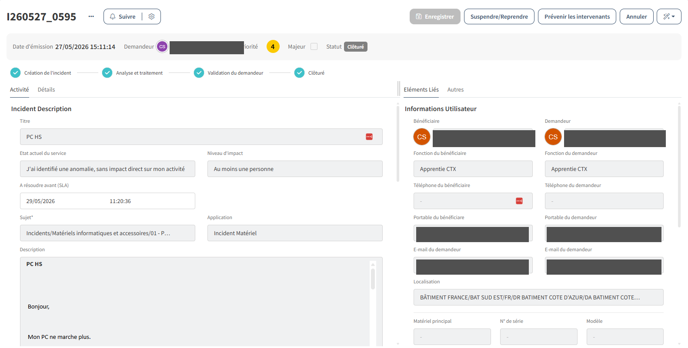
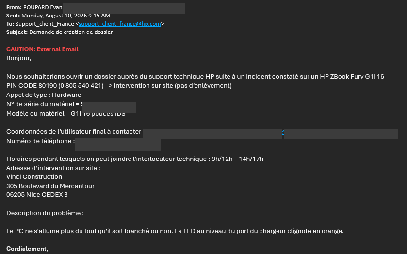
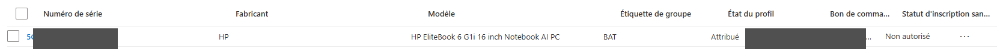

Contexte
Une utilisatrice du siège a signalé que son PC ne s'allumait plus. Son poste de travail étant inutilisable, son activité professionnelle était bloquée. L'incident a été ouvert via l'outil interne de ticketing, puis pris en charge par le service informatique.

Deux actions complémentaires devaient être lancées en parallèle :
- lui mettre à disposition rapidement un PC de prêt pour qu'elle puisse continuer à travailler ;
- ouvrir un dossier SAV chez le fabricant afin de faire intervenir un technicien pour la réparation du poste défaillant.
La prise en charge m'a été confiée côté service informatique, de la préparation du prêt jusqu'au retour du PC réparé et à la remise en stock de l'équipement de prêt.
Préparation d'un PC de prêt
Le service informatique maintient un petit stock de postes dédiés aux prêts, utilisés aussi bien pour les dépannages que pour les stagiaires de passage.
La préparation d'un poste de prêt suit exactement la même procédure qu'un nouveau poste (voir SP01) : le poste est démarré sur l'image système UNITY puis enrôlé via Microsoft AutoPilot. Le profil applique automatiquement les stratégies de l'entreprise et provisionne l'environnement de l'utilisateur à partir de son compte ; aucune configuration manuelle n'est nécessaire pour qu'il retrouve ses applications et ses accès métier.
Le poste a ensuite été remis en main propre à l'utilisatrice, ce qui lui a permis de reprendre son activité sans attendre la réparation de son PC d'origine.
Ouverture du dossier SAV
En parallèle, j'ai ouvert un dossier de garantie auprès du fabricant du PC défaillant afin de déclencher l'intervention d'un technicien. Le mail transmis au support HP précise les éléments nécessaires au traitement : numéro de série et modèle du matériel, type d'appel (hardware), coordonnées de l'utilisateur et adresse d'intervention, créneau horaire pendant lequel l'utilisateur est joignable, et description du symptôme constaté (poste qui ne s'allume plus, LED clignotant orange au branchement). Cette démarche permet de ne pas sortir le poste du parc, qui reste réparable, plutôt que d'en commander un nouveau.

Retour du PC réparé
Une fois la réparation effectuée par le technicien du fabricant, le PC d'origine a été restitué à l'utilisatrice et le PC de prêt a été récupéré par le service informatique. L'utilisatrice retrouve ainsi son environnement de travail habituel.
Remise en stock du PC de prêt
Dernière étape du cycle : le PC de prêt est réinitialisé et à nouveau préparé selon la procédure standard, de manière à être immédiatement disponible pour le prochain besoin : un nouveau dépannage ou l'arrivée d'un stagiaire. Cette remise en stock garantit que le service dispose en permanence d'un parc de prêt opérationnel. Le statut du poste est mis à jour dans l'inventaire pour refléter son état réel à chaque étape du cycle.

Conclusion
L'utilisatrice a pu reprendre son activité sans attente grâce au PC de prêt, pendant que le SAV fabricant prenait en charge la réparation du poste d'origine. Cette mission m'a permis de traiter un incident bloquant de bout en bout : réponse immédiate pour l'utilisatrice, gestion administrative de la garantie, et remise en condition du parc de prêt pour les besoins suivants.
Compétences validées
Cette situation professionnelle valide les compétences suivantes :
Gérer le patrimoine informatique
Gestion du cycle de vie d'un poste : SAV constructeur sous garantie, suivi du parc de prêt et remise en stock pour les besoins suivants.
Voir la compétence → C 02Répondre aux incidents et aux demandes d'assistance et d'évolution
Prise en charge d'un incident bloquant, décision rapide de prêt pour maintenir l'activité, ouverture et suivi du dossier SAV.
Voir la compétence → C 03Mettre à disposition des utilisateurs un service informatique
Remise d'un poste de prêt prêt à l'emploi et restitution du poste d'origine une fois réparé.
Voir la compétence →